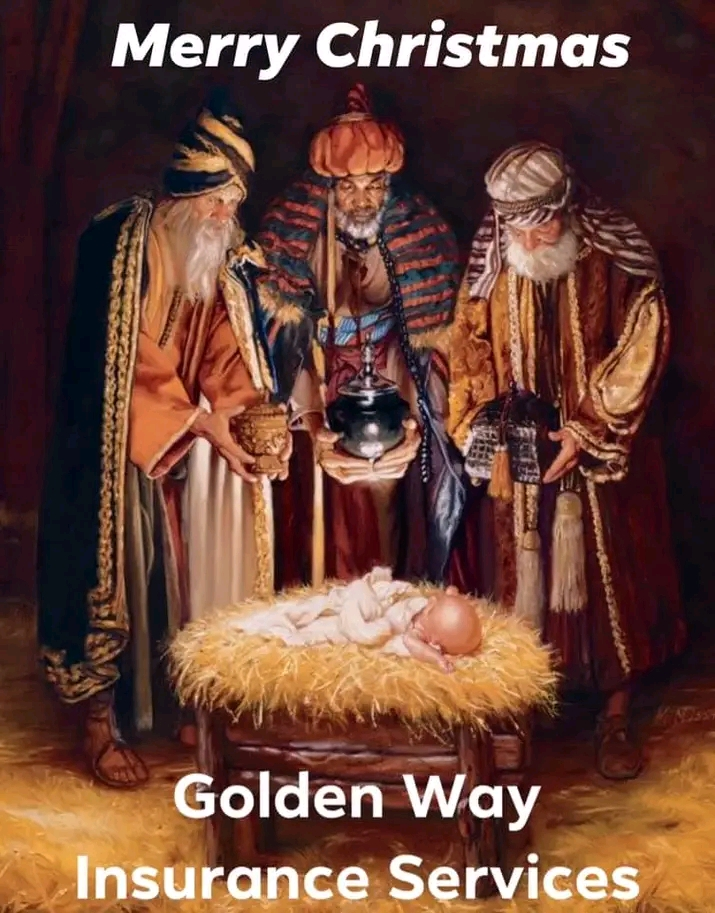

"CULTURES OF ARTECHE EASTERN SAMAR"
(DECEMBER 25)"CHRISTMAS"

HAVE A LONGEST CHRISTMAS CELEBRATION ?The Philippines,one of the six predominantly Christian countries in Asia, boasts the earliest Ang longest Christmas season in the world. Every year, Filipino all around the world mark September 1, as the start of the Christmas countdown. The "Ber months" countdown, which runs from September to December, is one of the most important traditions that sets part Christmas in the Philippines from celebration in the rest of the world. September 1 usually start with radio and TV station playing Christmas music.(Cue Jose Mari Chan and the endless memes.) Stalls selling Christmas decoration and fireworks begin to line the street. In some households, Christmas decorations are already hung up this early. The most common of which is the "parole," a star- shaped Christmas lantern made of wood and paper, or metal and a shell called capiz usually used for window pane. Another Christmas tradition that starts early for Filipinos is Christmas caroling. Similar to trick- or - treating, Filipinos Children go from house -to- house to sing Christmas carols in exchange for some coins, other wise kown as "aguinaldo." They usually sing with make - shift instruments like tambourines made from metal bottlecaps, maracas made out of bottles filled with coins, and drums from empty cannisters.